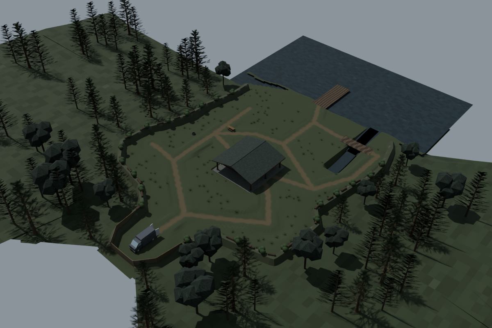
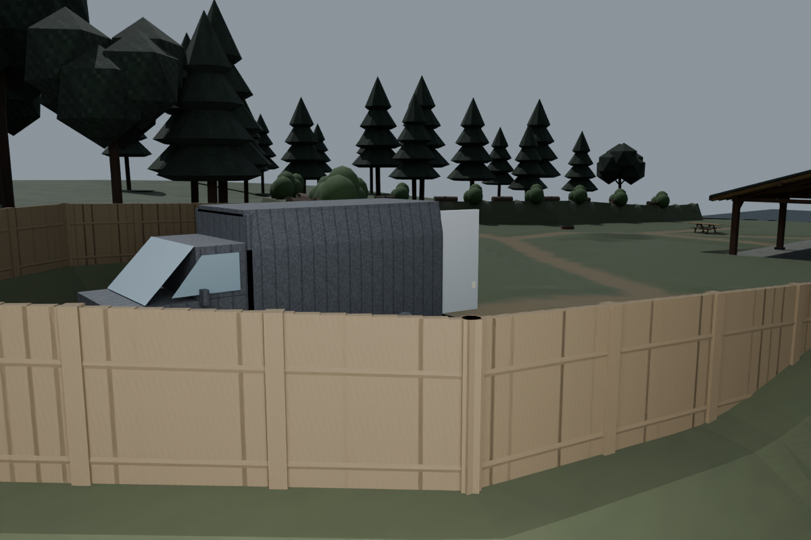
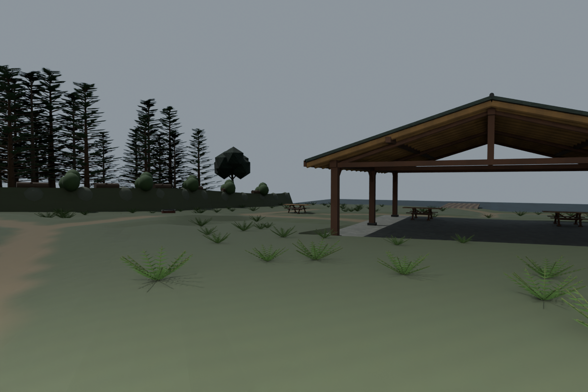
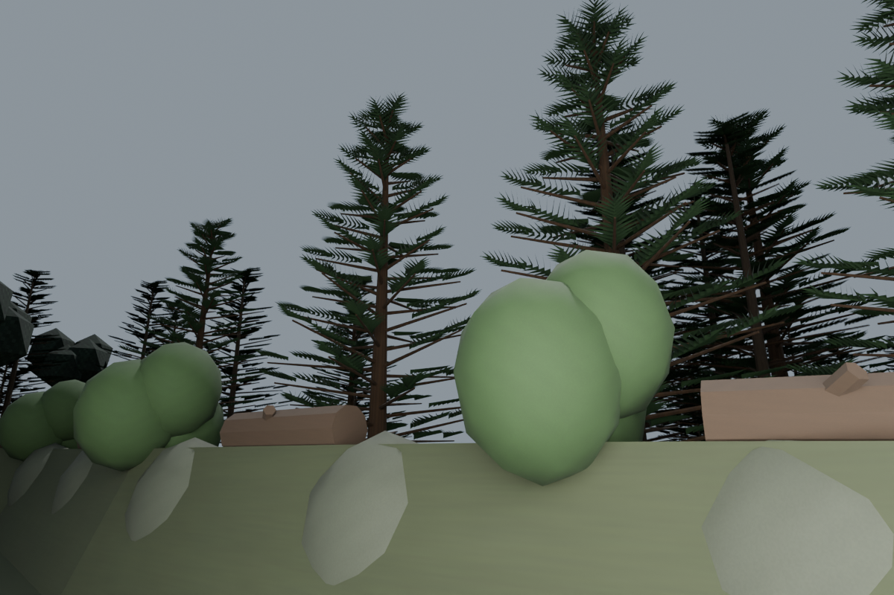
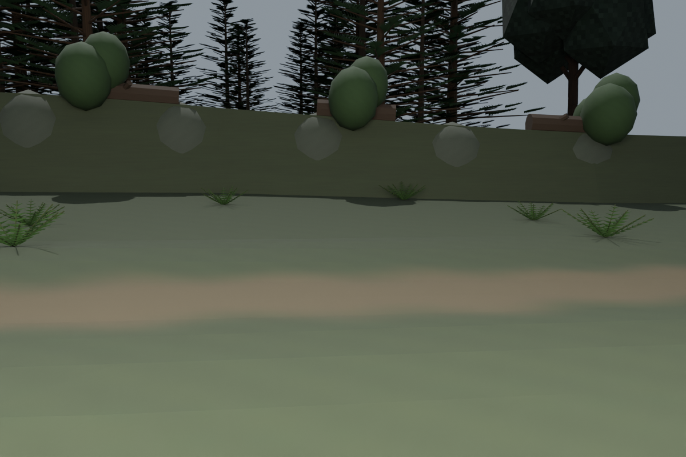
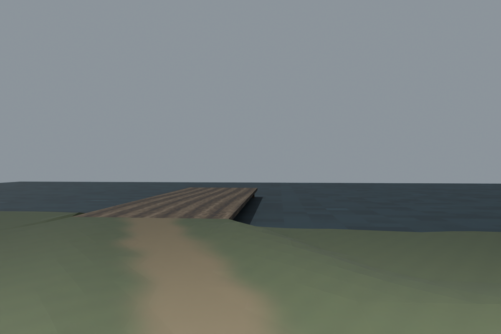

Current organic footprint and arrival neck

Native development review, 24 October 2026. Actual canonical van; desquareified ground; layered 3D and supplemental billboard trees; close ferns. Art remains under refinement. These are native captures, not runtime acceptance.
Mandatory desquareify gate · Detail/model queue · Remote generator/breaker requirement






Next models: tents, camp gear/bedrolls, portable toilets, designated refuge shrubs, hedges, park details, lanterns/campfires, dock shed/generator/light string and rowboat. No completion credit is claimed for queued assets.